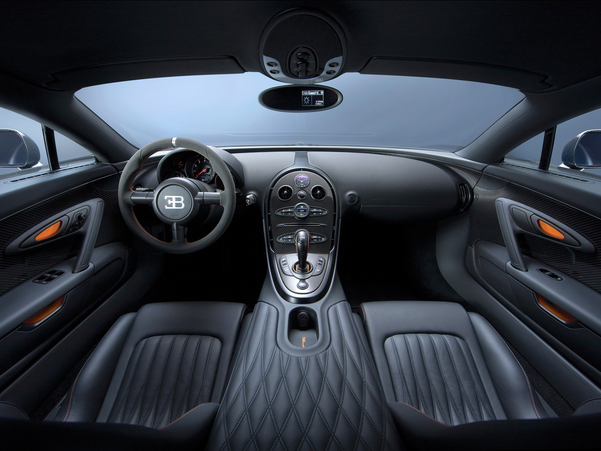

Key Bugatti Features
The Bugatti Veyron is a masterpiece of modern automotive engineering. It combines extreme power, advanced technology, and luxurious craftsmanship in a single car. Every detail, from the engine to the interior, is designed to deliver both speed and precision. These features make the Veyron not just a car, but a symbol of what is possible when performance and design meet.
See detailed Veyron key features and specs on KEDCars
- 8.0-liter W16 engine – delivers over 1,000 horsepower
- 7-speed dual-clutch transmission – fast and smooth gear changes
- All-wheel drive – excellent traction and control
- Aerodynamic body – stays stable while reducing drag
- Automatic rear wing – improves handling and braking
- Luxury interior – handcrafted leather, aluminum, and carbon fiber
